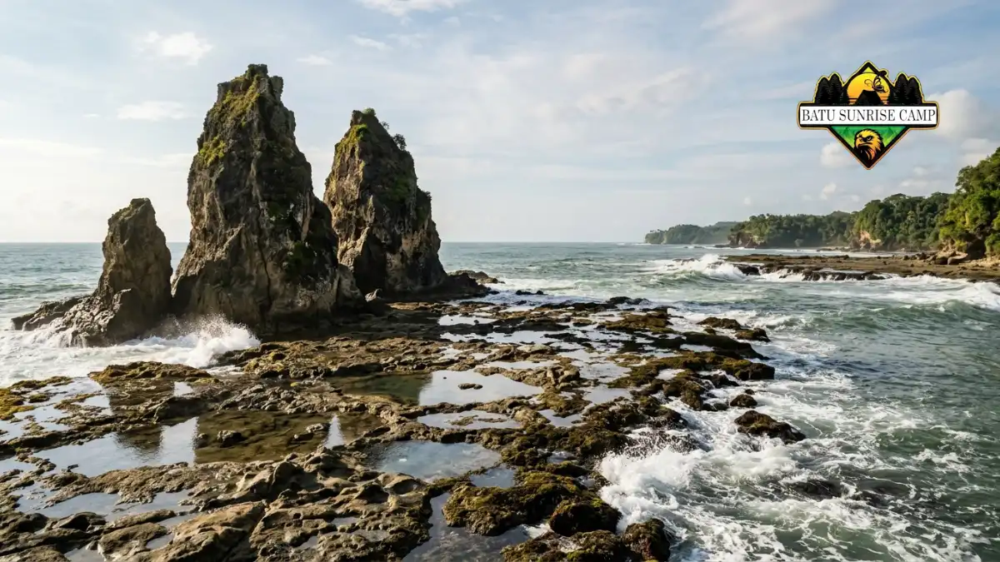

Camping di Pantai Sawarna adalah kegiatan bermalam dengan tenda di pesisir Desa Sawarna, Kabupaten Lebak, Banten, yang menawarkan pantai berpasir putih dan formasi karang.
- Kawasan Sawarna terbuka 24 jam, sehingga pengunjung dapat bermalam dan menikmati matahari terbit.
- Tiket masuk kawasan berkisar Rp5.000 sampai Rp10.000 per orang, tergantung hari dan pengelola.
- Area bertenda yang sering dipilih berada di dekat Pantai Tanjung Layar dan Pantai Pasir Putih Ciantir.
- Ombak Samudra Hindia kuat, sehingga keselamatan harus menjadi prioritas utama.
- Persiapan perlengkapan dan anggaran yang realistis membuat perjalanan lebih nyaman.
Apa itu camping di Pantai Sawarna?
Camping di Pantai Sawarna adalah bermalam dengan tenda di kawasan wisata pesisir selatan Banten, dekat Samudra Hindia, dengan suasana alam terbuka dan fasilitas sederhana.
Pantai Sawarna sebenarnya bukan satu pantai tunggal. Menurut laman resmi Indonesia Travel yang diakses pada November 2026, Sawarna adalah kawasan wisata yang terdiri atas beberapa pantai, gua, air terjun, dan perbukitan, dengan garis pantai yang membentang sekitar 20 kilometer. Angka ini menunjukkan bahwa pengunjung punya banyak pilihan titik untuk berkemah.
Camping di kawasan ini cocok bagi pemula yang ingin mencoba berkemah dekat pantai tanpa harus mendaki gunung. Pelancong yang ingin bermalam murah, pecinta fotografi sunrise dan sunset, serta rombongan komunitas juga banyak memilih Sawarna.
Namun camping di pantai tetap membawa risiko, misalnya angin kencang, pasang laut, dan ombak besar, sehingga pengunjung perlu memahami batasannya sebelum berangkat.
Di mana lokasi Pantai Sawarna dan bagaimana menuju ke sana?
Pantai Sawarna berada di Desa Sawarna, Kecamatan Bayah, Kabupaten Lebak, Banten, dan dapat dijangkau dengan kendaraan pribadi dari Jakarta maupun Bandung melalui beberapa jalur darat.
Dari Jakarta, jalur barat yang umum dipakai melewati Serang, Pandeglang, Malingping, dan Bayah sebelum tiba di Sawarna. Jalur timur melewati Ciawi, Bogor, Cibadak, Pelabuhan Ratu, dan Cisolok.
Dari Bandung, rute yang lazim melalui Cianjur, Sukabumi, Cibadak, Pelabuhan Ratu, dan Cisolok, sesuai informasi Indonesia Travel.
Setibanya di pusat desa, kendaraan roda empat biasanya diparkir di kantong parkir utama. Menurut Good News From Indonesia edisi 24 Mei 2026, akses menuju Pantai Tanjung Layar hanya dapat dilalui sepeda motor atau berjalan kaki, dengan jalan setapak sekitar 30 menit di antara pohon kelapa. Karena itu, barang bawaan sebaiknya ringkas. Untuk rincian ongkos perjalanan, baca juga biaya camping di Pantai Sawarna lengkap dengan tiket dan rute.
Titik mana saja yang cocok untuk camping di Sawarna?
Titik camping Sawarna yang sering dipilih berada di sekitar Pantai Tanjung Layar dan Pantai Pasir Putih Ciantir, karena dekat permukiman warga, warung, dan fasilitas.
Good News From Indonesia edisi 24 Mei 2026 menyebut bahwa pengunjung yang ingin bermalam di sekitar Pantai Tanjung Layar dapat mendirikan tenda di area rerumputan kering di bawah pohon pinus. Karang di Tanjung Layar menjadi latar foto yang populer saat pagi dan sore hari.

Formasi karang Tanjung Layar yang ikonik menjulang di pesisir Sawarna, menjadi latar foto populer bagi pengunjung yang berkemah di area sekitar.
Pantai Pasir Putih Ciantir berada dalam satu garis pantai yang berdampingan dengan Tanjung Layar. Tiket kawasan yang dibayar di gerbang desa disebut mencakup akses ke kedua pantai tersebut.
Sebagian pengunjung juga memilih area dekat Legon Pari, Karang Taraje, dan Pulo Manuk sebagai tujuan jelajah di siang hari.
Pilihlah lokasi tenda yang berada jauh dari garis air pasang, tidak tepat di bawah pohon tua yang rapuh, dan masih terlihat dari permukiman agar mudah meminta bantuan.
Sebelum mendirikan tenda, tanyakan kepada warga atau pengelola setempat mengenai area yang diperbolehkan.
Berapa biaya camping di Pantai Sawarna pada 2026?
Biaya camping di Pantai Sawarna umumnya terdiri atas tiket masuk kawasan, parkir, sewa lahan atau tenda, serta makan, dengan total dapat bervariasi tergantung rombongan.
Tiket masuk kawasan dilaporkan berbeda antarsumber. Good News From Indonesia edisi 24 Mei 2026 menyebut retribusi Rp5.000 per orang, sedangkan laman Indonesia Travel menyebut Rp10.000 per orang.
Orami pada Agustus 2024 mencatat tiket Rp5.000 pada hari kerja dan Rp10.000 pada akhir pekan serta hari libur. Perbedaan ini wajar karena tarif dapat disesuaikan, sehingga konfirmasi ulang di gerbang desa tetap penting.
Untuk parkir, Orami pada Agustus 2024 mencatat tarif sepeda motor Rp5.000 dan mobil Rp10.000. Adapun sewa area camping disebut sekitar Rp50.000 per malam dalam panduan wisata yang beredar, sedangkan villa berkisar Rp500.000 hingga Rp2.000.000 per malam.
Angka ini hanya gambaran dan dapat berubah. Susunan anggaran yang lebih rinci tersedia di panduan menghitung biaya camping di Pantai Sawarna.
Kapan waktu terbaik camping di Pantai Sawarna?
Waktu terbaik camping di Pantai Sawarna adalah hari kerja pada musim kemarau, karena cuaca lebih stabil dan suasana lebih sepi dibanding akhir pekan.
Pada akhir pekan dan libur panjang, pengunjung biasanya lebih ramai dan tarif tiket dapat lebih tinggi. Hari kerja memberi ruang lebih lega untuk memilih lokasi tenda. Selain itu, tiket hari kerja yang dilaporkan Orami lebih murah dibanding akhir pekan.
Musim hujan membawa risiko hujan lebat dan angin kencang. Sebagai contoh, BMKG pernah memperingatkan potensi angin kencang hingga 45 kilometer per jam di wilayah selatan Pandeglang dan Lebak pada 9 sampai 11 April 2026, seperti dikutip Merah Putih.
Periksa prakiraan cuaca BMKG satu hari sebelum berangkat, lalu tunda perjalanan jika peringatan cuaca ekstrem diberlakukan.
Fasilitas apa yang tersedia di area camping Sawarna?
Fasilitas di sekitar area camping Sawarna umumnya berupa toilet umum, tempat bilas air tawar, warung makan, dan parkir, yang tersebar di permukiman warga dekat pantai.
Menurut Good News From Indonesia edisi 24 Mei 2026, toilet umum dan tempat bilas air tawar berada di permukiman warga yang berbatasan langsung dengan area pasir pantai.
Warung dan penginapan juga mudah ditemukan di desa. Tersedia pula berbagai homestay, villa, dan hotel di sekitar kawasan.
Meski begitu, fasilitas di area terbuka tetap terbatas. Pengunjung sebaiknya membawa air minum, lampu, dan kantong sampah sendiri. Daftar barang yang disarankan dibahas di daftar perlengkapan camping di Pantai Sawarna yang wajib dibawa.
Aktivitas apa yang bisa dilakukan selain camping?
Selain camping, Sawarna menawarkan wisata pantai, gua, perbukitan, dan air terjun, sehingga satu perjalanan dapat diisi dengan banyak aktivitas alam yang berbeda.
Indonesia Travel menyebut gua alami seperti Goa Lalay, Goa Langir, dan Goa Seribu Candi, serta panorama dari Puncak Cariang, Bukit Senyum, dan Muara Tiga. Curug Cisujen juga termasuk daya tarik kawasan. Pengunjung yang menyukai fotografi dapat menjelajah Tanjung Layar saat cahaya pagi atau sore.
Peselancar mengenal Sawarna karena gulungan ombak di sisi tertentu pantai. Orami menyebut ombak di beberapa titik cenderung kecil hingga sedang sehingga cocok untuk pemula, tetapi kondisi laut dapat berubah. Pengunjung yang tidak berpengalaman sebaiknya tidak berenang tanpa pendampingan.
Camping atau menginap di homestay, mana yang lebih cocok?
Camping cocok untuk pengunjung yang berhemat dan dekat alam, sedangkan homestay atau villa lebih nyaman bagi keluarga, anak kecil, dan perjalanan saat cuaca tidak menentu.
Camping memberi pengalaman bangun di tepi pantai dengan biaya lebih rendah, tetapi menuntut perlengkapan, tenaga, dan kewaspadaan terhadap angin serta pasang.
Homestay dan villa menawarkan kasur, kamar mandi, dan atap yang kokoh, dengan tarif villa berkisar Rp500.000 hingga Rp2.000.000 per malam menurut panduan wisata yang beredar.
Kelompok pemula dapat memadukan keduanya, misalnya camping satu malam saat cuaca cerah dan menginap di homestay pada malam berikutnya. Pilihan ini mengurangi kelelahan dan risiko cuaca buruk.
Kesalahan umum saat camping di Pantai Sawarna
Kesalahan umum camping di Pantai Sawarna meliputi mendirikan tenda terlalu dekat air pasang, membawa barang terlalu banyak, mengabaikan peringatan ombak, dan meninggalkan sampah di pantai.
Pertama, tenda yang berdiri terlalu dekat garis air dapat terendam saat pasang naik.
Kedua, barang berat menyulitkan perjalanan, apalagi bila harus berjalan kaki menuju Tanjung Layar.
Ketiga, pengunjung kerap bermain air di titik berombak besar. ANTARA Banten pada 2025 melaporkan seorang wisatawan terseret ombak di Pantai Goa Langir saat libur Lebaran, dan BPBD Lebak mengimbau wisatawan tidak berenang ketika gelombang tinggi. Pembahasan lengkap tersedia di panduan keselamatan camping di Pantai Sawarna dari ombak dan arus balik.
Kesalahan keempat adalah meninggalkan sampah. Kawasan ini dikelola warga dan BUMDes setempat, sehingga kebersihan menjadi tanggung jawab bersama.
Tips camping di Pantai Sawarna agar aman dan nyaman
Tips camping di Pantai Sawarna yang utama adalah memeriksa cuaca, memilih lahan aman, membawa perlengkapan ringkas, mematuhi arahan warga, dan membawa pulang seluruh sampah.
- Datanglah sebelum sore agar tenda berdiri saat masih terang.
- Gunakan pasak tenda yang kuat karena angin pantai sering kencang.
- Simpan dokumen, ponsel, dan uang tunai dalam kantong kedap air.
- Bawa air minum dan makanan cukup, karena warung dapat tutup larut malam.
- Catat nomor darurat Basarnas 115 dan kontak pengelola desa.
- Jangan berenang di titik berombak besar atau pada malam hari.
Kesimpulan
Camping di Pantai Sawarna menawarkan pengalaman bermalam di pesisir selatan Banten dengan biaya relatif terjangkau, selama persiapan dilakukan dengan baik.
Pilih titik tenda dekat permukiman, konfirmasi tiket di gerbang, dan hindari berenang di area berombak besar.
Langkah berikutnya adalah menyiapkan barang bawaan, menghitung anggaran, dan memahami aturan keselamatan. Ketiganya dibahas dalam artikel pendukung tentang perlengkapan, biaya, dan keselamatan camping di Pantai Sawarna.

Pertanyaan yang sering diajukan (FAQ)